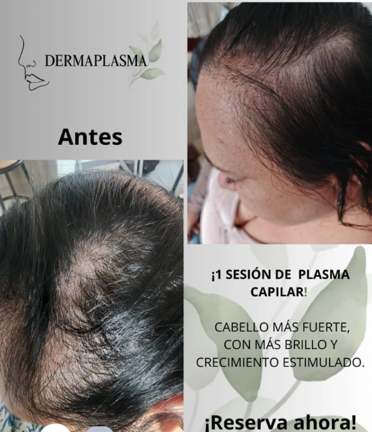
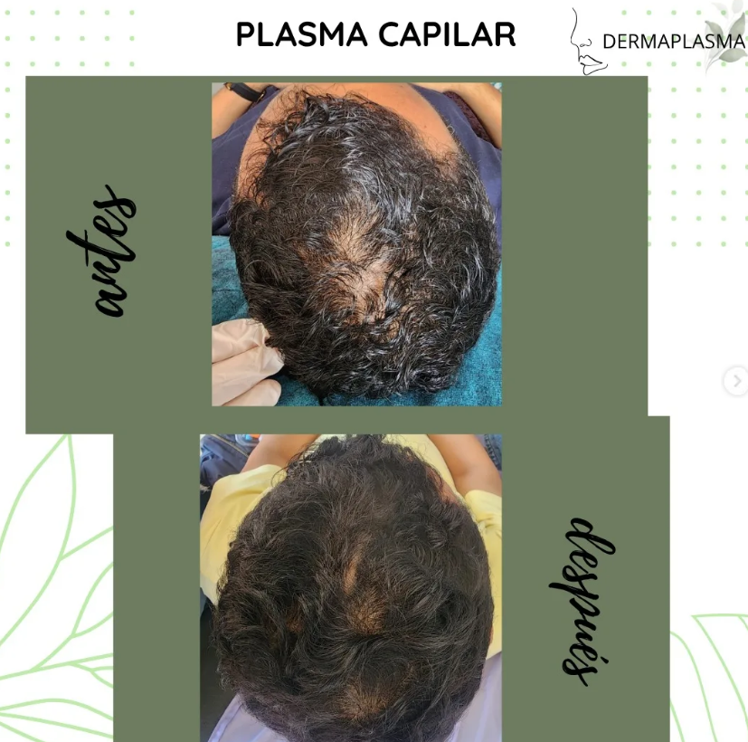

Beneficios del Plasma Facial
- Estimula la producción natural de colágeno.
- Mejora la firmeza de la piel.
- Reduce líneas de expresión.
- Ayuda a disminuir manchas.
- Mejora la textura del rostro.
- Aporta luminosidad y frescura.
- Favorece la regeneración celular.
✨ Ideal para personas que desean un rostro más joven,
luminoso y saludable.

Beneficios del Plasma Capilar
- Disminuye la caída del cabello.
- Fortalece los folículos capilares.
- Estimula el crecimiento de nuevo cabello.
- Mejora el grosor y densidad capilar.
- Nutre profundamente el cuero cabelludo.
- Ayuda a revitalizar zonas debilitadas.
- Favorece un cabello más fuerte y saludable.
✨ Recomendado para personas con caída del cabello
o pérdida de densidad capilar.

Resultados Esperados
- Mejora progresiva de la piel.
- Mayor hidratación y luminosidad.
- Cabello más fuerte y resistente.
- Aspecto más saludable y rejuvenecido.
- Procedimientos mínimamente invasivos.
- Recuperación rápida.
✨ Cada paciente es único. Los resultados pueden variar
según las características individuales.